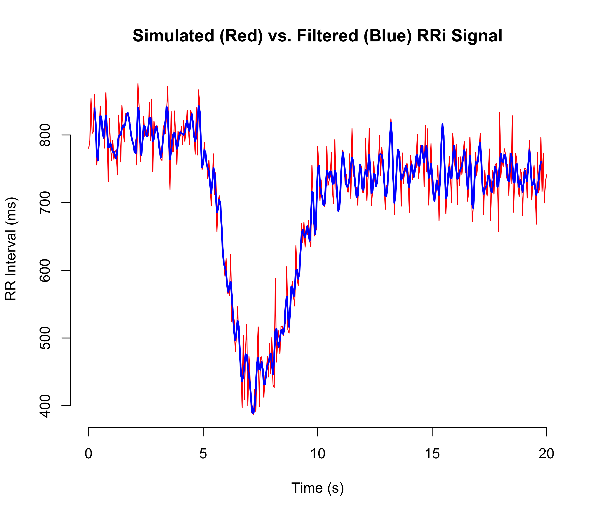
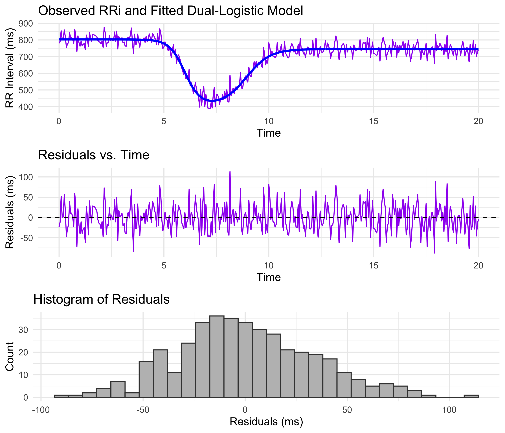

CardioCurveR: Nonlinear Modeling of R-R Interval Dynamics
CardioCurveR provides an automated and robust framework for modeling RR interval (RRi) signals. The package is built around a dual-logistic model, as described by Castillo-Aguilar et al. (2025), which captures both the rapid drop in RRi during exercise and the subsequent recovery phase. In our formulation, the model is defined by the following equation:
where represents the baseline RRi level, controls the amplitude of the drop, modulates the steepness of the drop phase, is the time center of the drop, scales the recovery amplitude relative to , controls the steepness of the recovery phase, and shifts the recovery phase in time relative to the drop.
CardioCurveR also incorporates advanced signal filtering techniques using a zero-phase Butterworth filter to preprocess the RRi data and remove edge artifacts. This ensures that the dynamic fluctuations are preserved for subsequent non-linear modeling.
Installation
To install the development version of CardioCurveR, run the following commands in R. Make sure that you have the devtools package installed:
if (!requireNamespace("devtools", quietly = TRUE)) {
install.packages("devtools")
}
devtools::install_github("matcasti/CardioCurveR")Core Functions
The package provides several key functions:
Dual-Logistic Model: dual_logistic()
This function implements the dual-logistic model from Castillo-Aguilar et al. (2025):
It takes a vector of time points and a named vector (or list) of parameters, returning the modeled RRi values.
Parameter Estimation: estimate_RRi_curve()
This function optimizes the dual-logistic model parameters using a robust Huber loss function. The optimization is performed via the optim() function with box constraints (default method "L-BFGS-B"). It is designed to yield reliable parameter estimates even in the presence of noisy data.
Signal Filtering: filter_signal()
This function applies a Butterworth low-pass filter using zero-phase filtering (with filtfilt()) to clean the RRi signal. To mitigate edge effects from filtering, it trims a specified number of samples from the beginning and end of the filtered signal.
Adaptive Outlier Cleaning: clean_outlier()
The clean_outlier() function removes ectopic or noisy beats from an RRi signal. It fits a LOESS model to capture local trends, calculates residuals, and flags outliers based on a robust threshold (multiples of the median absolute deviation). Outliers are then replaced by one of three methods: drawing from a Gaussian or uniform distribution, or simply replacing with the LOESS-predicted values.
Example Workflow
Below is an extended example that demonstrates the full workflow of simulating, filtering, visualizing, and fitting an RRi signal model.
library(CardioCurveR)
# Simulate a time vector and a theoretical RRi signal using the dual-logistic model.
set.seed(123)
time_vec <- seq(0, 20, by = 0.1)
# Define the true model parameters from Castillo-Aguilar et al. (2025)
true_params <- list(alpha = 800, beta = -375, c = 0.85,
lambda = -3, phi = -2,
tau = 6, delta = 3)
# Compute the theoretical RRi curve using dual_logistic()
RRi_theoretical <- dual_logistic(time_vec, true_params)
# Visualize the theoretical model
plot(time_vec, RRi_theoretical, type = "l", col = "blue", lwd = 2,
main = "Theoretical Dual-Logistic RRi Model",
xlab = "Time (s)", ylab = "RR Interval (ms)")
grid()
# Simulate a noisy RRi signal by adding Gaussian noise
RRi_simulated <- RRi_theoretical + rnorm(length(time_vec), sd = 35)
# Apply the Butterworth low-pass filter to the noisy RRi signal
RRi_filtered <- filter_signal(RRi_simulated, n = 3, W = 0.5, abs = 5)
# Plot the simulated signal and its filtered version
plot(time_vec, RRi_simulated, type = "l", col = "red", lwd = 1,
main = "Simulated (Red) vs. Filtered (Blue) RRi Signal",
xlab = "Time (s)", ylab = "RR Interval (ms)")
lines(time_vec, RRi_filtered, col = "blue", lwd = 2)
grid()
# Estimate the dual-logistic model parameters from the noisy RRi signal
fit_summary <- estimate_RRi_curve(time = time_vec, RRi = RRi_simulated)
print(fit_summary)
#> $method
#> [1] "L-BFGS-B"
#>
#> $parameters
#> alpha beta c lambda phi tau
#> 800.3824502 -378.7915112 0.8372124 -3.2515187 -1.9724294 6.0032591
#> delta
#> 2.8764451
#>
#> $objective_value
#> [1] 103300
#>
#> $convergence
#> [1] 0
# Overlay the fitted model on the simulated data
fitted_RRi <- dual_logistic(time_vec, fit_summary$parameters)
plot(time_vec, RRi_simulated, type = "l", col = "grey", lwd = 1,
main = "Simulated RRi Signal with Fitted Model",
xlab = "Time (s)", ylab = "RR Interval (ms)")
lines(time_vec, fitted_RRi, col = "red", lwd = 2)
grid()
# For additional insight, plot the residuals from the fitted model
residuals <- RRi_simulated - fitted_RRi
plot(time_vec, residuals, type = "l", col = "purple",
main = "Residuals of the Fitted Dual-Logistic Model",
xlab = "Time (s)", ylab = "Residual (ms)")
abline(h = 0, lty = 2)
grid()The above example demonstrates multiple steps. First, a theoretical RRi signal is computed from the dual-logistic model. Next, a noisy version of the signal is simulated and then cleaned using a Butterworth low-pass filter. The noisy signal is used to estimate the dual-logistic model parameters through a robust optimization procedure. Visualizations are provided for the theoretical curve, the noisy versus filtered signals, the fitted model overlay, and the residuals of the fit, offering comprehensive insight into each stage of the process.
Enjoy exploring your RR interval dynamics and modeling them robustly with CardioCurveR!